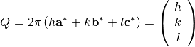
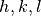
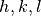

The purpose of this document is to explain how Mantid is using information about unit cells and their orientation with respect to the laboratory frame. For a detailed description, see the UB matrix implementation notes.
The physics of a system studied by neutron scattering is described by the conservation of energy and momentum. In the laboratory frame:


Note that the left side in the above equations refer to what is happening to the lattice, not to the neutron.
Let’s assume that we have a periodic lattice, described by lattice
parameters  . The reciprocal
lattice will be described by parameters
. The reciprocal
lattice will be described by parameters
 . Note that
Mantid uses
. Note that
Mantid uses  type of notation, like in
crystallography.
type of notation, like in
crystallography.
For such a lattice, the physics will be described in terms of reciprocal lattice parameters by

The  matrix formalism relates
matrix formalism relates  and
and
 with the following equation:
with the following equation:

The  matrix transforms the  triplet
into a Cartesian system, with the first axis along
matrix transforms the  triplet
into a Cartesian system, with the first axis along
 , the second in the plane defined by
and
, the second in the plane defined by
and  , and the third axis
perpendicular to this plane. In the Busing and Levi convention (W. R.
Busing and H. A. Levy, Angle calculations for 3- and 4-circle X-ray and
neutron diffractometers - Acta Cryst. (1967). 22, 457-464):
, and the third axis
perpendicular to this plane. In the Busing and Levi convention (W. R.
Busing and H. A. Levy, Angle calculations for 3- and 4-circle X-ray and
neutron diffractometers - Acta Cryst. (1967). 22, 457-464):

The  matrix represents the rotation from this Cartesian
coordinate frame to the Cartesian coordinate frame attached to the
innermost axis of the goniometer that holds the sample.
matrix represents the rotation from this Cartesian
coordinate frame to the Cartesian coordinate frame attached to the
innermost axis of the goniometer that holds the sample.
The  matrix is the rotation matrix of the goniometer
matrix is the rotation matrix of the goniometer
Other useful equations:


The distance in reciprocal space to the  plane
is given by
plane
is given by

The distance in real space to the plane is
given by 
The angle between  and
and  is given by
is given by

All the functions defined for UnitCell are inherited by the
OrientedLattice objects. In addition, functions for manipulating
the  and
and  matricies are also provided.
matricies are also provided.
 direction. For an orthogonal lattice with
direction. For an orthogonal lattice with  along
along
 along
along  , and
, and
 along
along  , the
, the  matrix has the form:
matrix has the form: